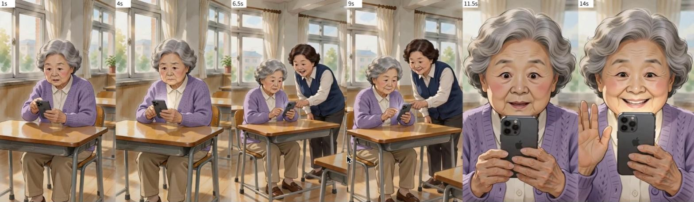
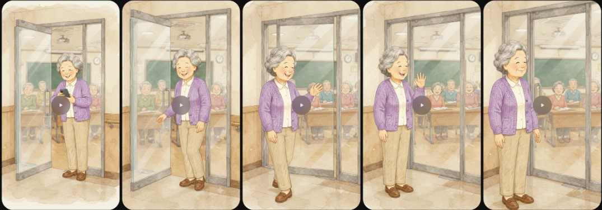
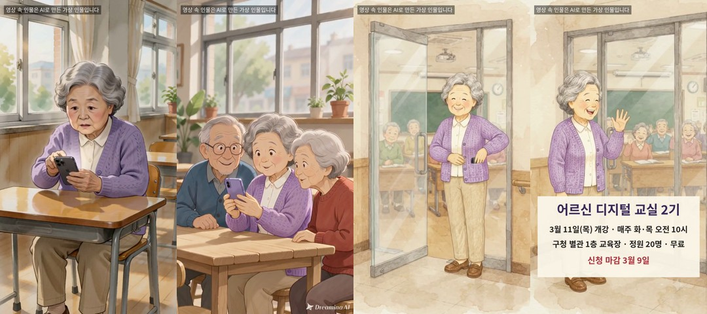

초급 · 번외편 3편 · 교실 2기를 알려라
30초 영상, 할머니 얼굴이 바뀌었다
같은 그림을 넣었는데, 서비스 셋을 거치자 할머니가 세 사람이 됐다
책의 QR이 가리키는 쪽: 세 서비스의 영상 · 이어 붙인 30초 · 장면 설명과 점검 기준(복사해서 따라 만들기)
결과물



그림과 영상 속 인물은 모두 AI로 만든 가상 인물입니다.
준비 중
이어 붙인 30초 영상은 배경 노래의 이용 조건을 확인한 뒤 올립니다. 지금은 장면 그림만 봅니다.